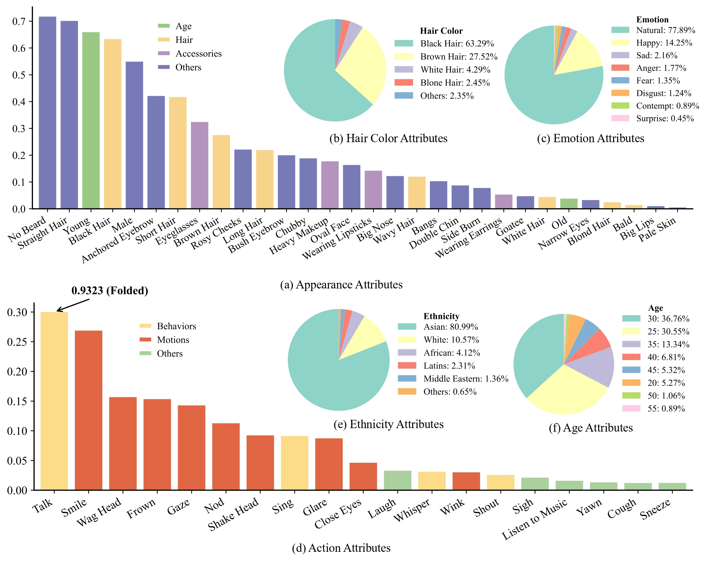

DH-FaceVid-1K: A Large-Scale High-Quality Dataset for Face Video Generation
Accepted to the IEEE/CVF International Conference on Computer Vision (ICCV) 2025
📜 Abstract & Overview

The figure above illustrates the scale and diversity of the DH-FaceVid-1K dataset. It features over 270,000 video clips from more than 20,000 unique individuals, totaling over 1,200 hours. A key feature is its rich multi-ethnic composition, with a significant focus on Asian faces to address existing data gaps.
Human-centric generative models are becoming increasingly popular, giving rise to various innovative tools and applications, such as talking face videos conditioned on text or audio prompts. The core of these capabilities lies in powerful pretrained foundation models, trained on large-scale, high-quality datasets. However, many advanced methods rely on in-house data subject to various constraints, and other current studies fail to generate high-resolution face videos, which is mainly attributed to the significant lack of large-scale, high-quality face video datasets. In this paper, we introduce a human face video dataset, DH-FaceVid-1K. Our collection spans 1200 hours in total, encompassing 270,043 video samples from over 20,000 individuals. Each sample includes corresponding speech audio, facial keypoints, and text annotations. Compared to other publicly available datasets, ours distinguishes itself through its multi-ethnic coverage and high-quality comprehensive individual attributes. We establish multiple face video generation models supporting tasks such as Text-to-Video and Image-to-Video generation. In addition, we develop comprehensive benchmarks to validate the scaling law when using different proportions of our dataset. Our primary aim is to contribute a face video dataset, particularly addressing the underrepresentation of Asian faces in existing curated datasets and thereby enriching the global spectrum of face-centric data and mitigating demographic biases.
🔥 Download Instructions & Policy
These video samples are sourced from crowd-sourcing platforms. To ensure proper use and prevent data misuse, we manually review all download requests. By downloading and using this dataset, you are required to comply with the license agreement.
To request download access, please carefully fill out the form here. You must use an official institutional email address and clearly state your research purpose. Requests from personal email providers (e.g., Gmail, Outlook) will be rejected.
Once your request is approved, we will send download instructions to your provided email address, typically within 2-3 days. If you encounter any issues or do not receive the email within a reasonable time, please contact us at fenghe021209@gmail.com.
🚀 Open-source Plan
Our open-source roadmap is as follows. We will update the status here as we make progress.
Phase 1 In Progress
Open filtered public datasets video ID list.
Phase 2 In Progress
Open the first 10% of total data.
Phase 3 Planned
Open the next 40% of total data.
Phase 4 Planned
Open the remaining 50% of total data.
🎬 Sampled Videos
Please note that to ensure smooth page loading, we have resized all videos to 256x256.
Diverse and high-quality Asian face videos.
Multi-ethnic face videos.
Face videos covering a wide range of age distributions.
Face videos covering various head poses.
Face videos covering various emotions.
📊 Face Video Datasets Comparison
This chart compares DH-FaceVid-1K with other prominent public datasets in terms of scale, quality, and annotation richness. Our dataset demonstrates competitive advantages in data volume and attribute diversity.

📈 Statistics
Here we visualize the distributions of key attributes within the dataset, including general appearance, hair color, emotion, action, ethnicity, and age, showcasing its comprehensive coverage.
⚙️ Collection Pipeline
The data collection process involved several key stages: sourcing raw videos, detecting and cropping facial regions, filtering out low-quality or noisy clips, and generating detailed attribute descriptions.

📋 Comprehensive Attribute List
A detailed breakdown of the extensive attributes annotated in DH-FaceVid-1K, spanning ethnicities, appearance details, emotions, actions, and various lighting conditions.

📚 BibTeX
@inproceedings{di2025facevid,
title = {DH-FaceVid-1K: A Large-Scale High-Quality Dataset for Face Video Generation},
author = {Di, Donglin and Feng, He and Sun, Wenzhang and Ma, Yongjia and Li, Hao and Chen, Wei and Fan, Lei and Su, Tonghua and Yang, Xun},
booktitle = {Proceedings of the IEEE/CVF International Conference on Computer Vision (ICCV)},
year = {2025}
}